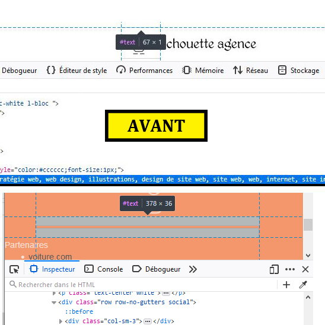

Présentation
Les moteurs de recherche utilisent tous des algorithmes qui leur permettent de dire si un site est très bon site ou le contraire.
Bien evidemment le très bon site sera toujours bien placer au niveau des moteurs de recherches. Pour s'assurer que notre site soit bien placer, il faut donc connaitre les algorithmes, et construire notre site en fonction des critères evalués.
Cependant il y a une limite à ne pas franchir, il s'agit des pratiques frauduleuses ...

Ces pratiques ci dessus sont considérées comme frauduleuse tout particulièrement pour google. Le but est de cacher du texte au yeux de l'utilisateur et de tromper l'algorithme des moteurs de recherche. On appelle ça du cloaking.Le spam de lien est également considéré comme de la tromperie.
La suppression des éléments est recommandé car le moteur de recherche pourrait considéré que notre site contourne frauduleusement l'algorithme . Si c'est le cas notre référencement naturelle sera pénalisé , on risque même dans le pire des cas d'être exclu des resultats de moteur de recherche.
Conclusion
Lorsque l'on fait du SEO, il faut toujours le faire en fonction des pratiques recommandées par les moteurs de recherches. Concevoir nos pages en pensant d'abord aux internautes, sans les tromper et penser aux éléments qui rendent notre site attrayant et unique. Car
ce sont là les véritables critères que veulent trouver les moteurs de recherche.